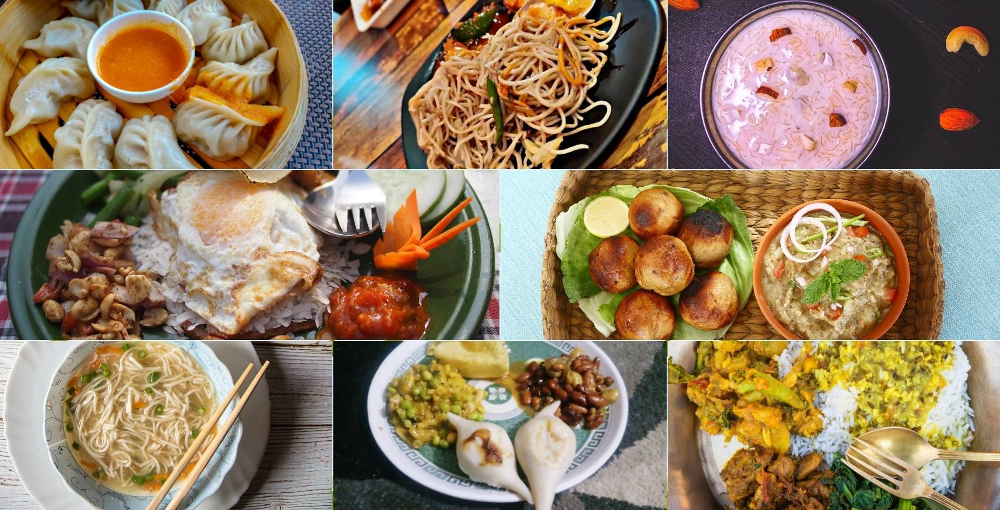

Nepal
Home to Mt Everest one of the rarest countries located in south asia
Pokhara,Nepal
This is a fascinating Landmaark most people visit in Nepal

Kathmandu,Nepal
Nepal Capital State Home of Nepal

NamoBudhha,Nepal
This area is where most Sherpas climb the mountain

Popular Nepali Dishes
One of the most well known dishes in Nepal

-Roti:one of the most common Nepalese Foods
-Dal Bhat: It’s like rice with lentil soup! You eat it with veggies and spicy pickles. Super tasty and makes you feel full!
-Thukpa: This is a yummy noodle soup with meat and veggies. It makes you feel cozy, like a warm hug in a bowl!
-Dhido: It’s a special kind of food made from buckwheat or millet. You eat it with lentils and veggies. It’s different and tasty!
-Sel Roti: Imagine a sweet, crispy doughnut made from rice! People make it for festivals, and it’s super fun to eat.